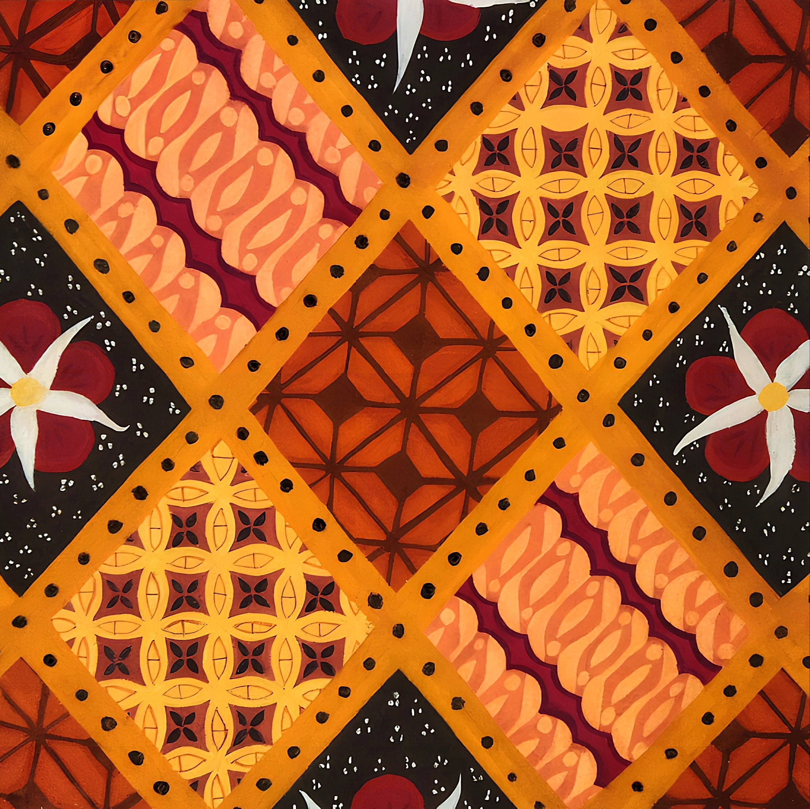

Harmoni Batik
The batik that I have painted is a combination of batik kawung from Yogyakarta and batik buketan from Pekalongan. The motif of batik kawung is shaped like rounds that resemble kawung fruit arranged geometrically. In Javanese culture, the kawung motif is interpreted as a symbol of human life, the hope is that humans will not forget their origins.
Batik buketan comes from the word "bouquet" which means flower arrangement. Batik buketan is in the form of flower ornaments arranged as if bound so that it looks like a bouquet. The flowers in this motif symbolize happiness, beauty, purity, and joy. Since batik buketan usually has additional ornaments, I added butterfly ornaments that seem to glitter in the middle of the batik motif. I decided to choose a butterfly ornament because butterflies symbolize a journey full of struggle to achieve beautiful results.